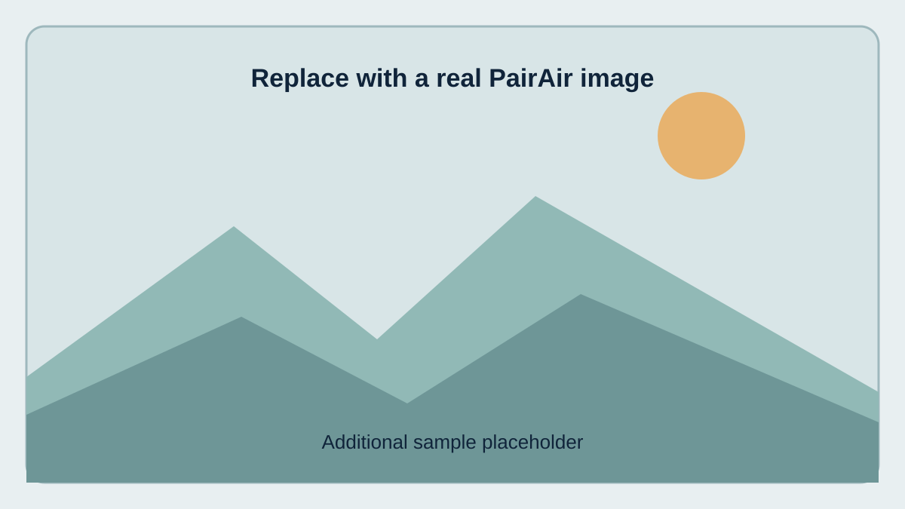

COMPUTER VISION · DATASET · AIR QUALITY
PairAir: Learning Air Quality Variations from Corresponding Outdoor Images
A paired-image framework for studying visual changes and air-quality variation across time.
[Institution / Department] · WACV camera-ready version in preparation
EARLIER OBSERVATION
Image + synchronized sensor measurement
PAIRED↔
LATER OBSERVATION
Matched view + later sensor measurement
Replace these placeholders with a true matched pair from your dataset. Do not publish illustrative images as dataset examples.
01
Overview
PairAir investigates whether changes between corresponding outdoor images can help estimate changes in measured air quality.
PairAir studies paired outdoor observations and their associated air-quality measurements. This project page will document the dataset, pairing protocol, evaluation, and release resources. Replace this paragraph with the final abstract-aligned summary before publication.
Important: enter only counts verified against the final dataset and paper. Distinguish theoretical possible pairs from valid released pairs.
02
Dataset
Explain how outdoor images are associated with sensor readings and how observations are matched across time.
Data and labels
- Outdoor images with view / image identifiers
- Acquisition date and time-slot metadata
- Synchronized sensor measurements
- Air-quality targets such as PM2.5 and PM10
Pairing principle
Describe the exact matching keys, any tolerance for timestamp alignment, missing-data handling, and criteria for excluding invalid pairs.
Representative samples
Replace the three sample images below with real, publication-approved PairAir examples. Use matched views when possible and add accurate date, location, and sensor metadata in each caption. Do not expose sensitive location or data that is not cleared for release.

03
Pairwise learning task
Use this section to make the dataset's central idea understandable at a glance.
1
Match
Find corresponding views across observations.
→
2
Compare
Represent visual changes between the two images.
→
3
Predict
Estimate the change in the selected sensor target.
Δy = ylater − yearlier
Replace or refine this notation to match the exact target definition in your paper.
If your method uses normalized features, a particular image representation, or a different sign convention, state it accurately here.
04
Evaluation and results
Summarize the evaluation protocol and the main verified findings without overstating the results.
Add a paper figure or a clean results table
Use actual metrics, units, split definitions, baselines, and uncertainty where available. Make sure the website and paper report the same values.
Recommended: describe date-wise and location-wise generalization only if those experiments were actually run.
05
Resources
PaperPDF link will be added after finalizationSOON
CodeRepository link pending releaseSOON
DatasetAccess details pending release approvalSOON
CitationUse the provisional entry below↓
Provisional BibTeX
@inproceedings{pairair2026,
title = {PairAir: Learning Air Quality Variations from Corresponding Outdoor Images},
author = {[Add authors]},
booktitle = {[Add the official venue]},
year = {2026}
}Provisional only: replace the authors, official conference name, year, and citation key with the exact publisher-provided BibTeX before public release.